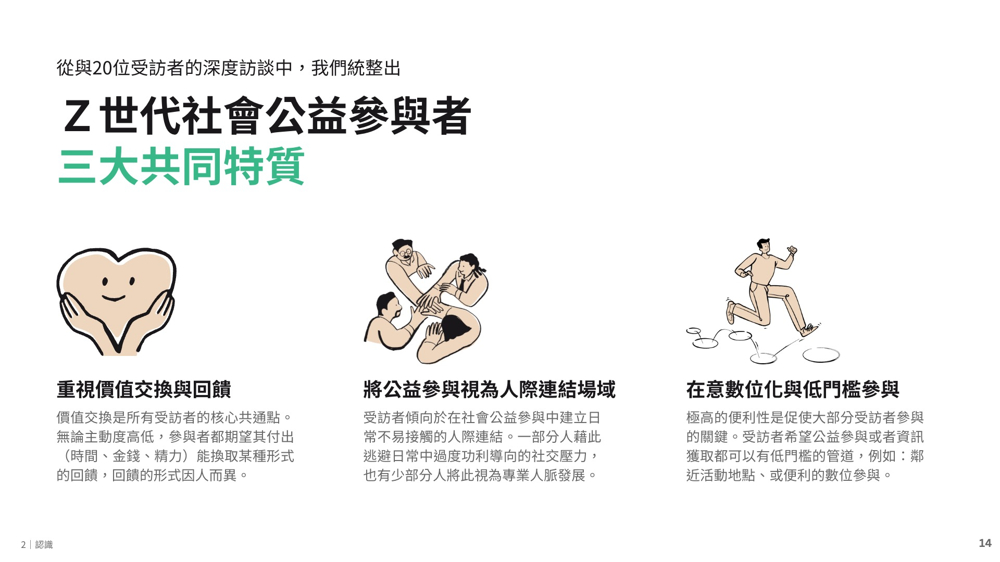
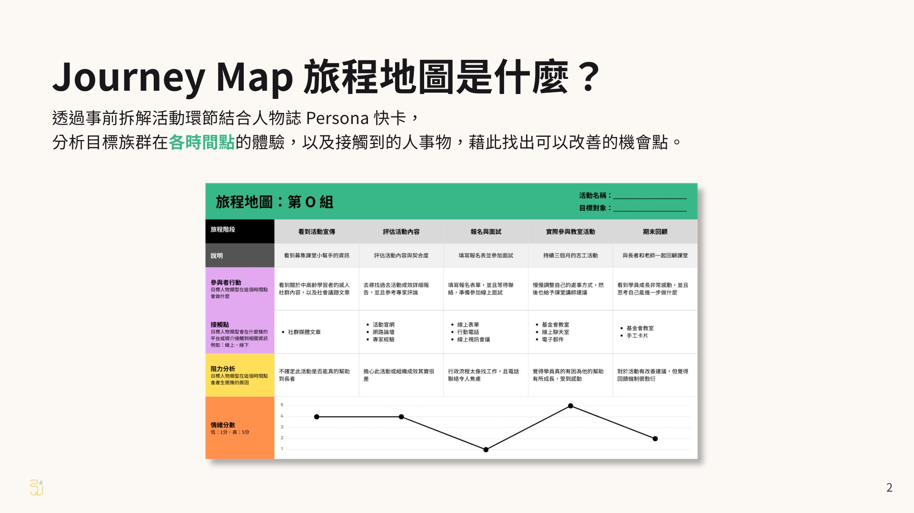

UX Research × Service Design
for the AI Era
你的團隊是否總是無法有效創新？
團隊的想法很豐富，卻總是建立在猜測上，收斂出來的方案屢屢失敗。
活動辦得很熱鬧，但根本問題從來沒解決：你其實不夠了解你的使用者。
我怎麼為你的團隊帶來創新？
步驟一
多數產品的失敗，是團隊憑對使用者的想像在做。我用研究讓你看到真實的人怎麼想，甚至為什麼不信任你的產品，當然也包括那些容易被忽略的使用者。
步驟二
研究常常做完就躺在報告裡。我擅長的是把發現直接轉成設計和共創的依據，讓團隊每一個決定都知道為什麼這樣做，不再回到憑感覺。
步驟三
你能拿出對內說得清楚的邏輯，證明這個創新為什麼會有效、對誰有效，讓主管和團隊都買單。
讓我們先深入理解服務對象，再共創對商業與社會都有價值的服務和產品。
我擅長把最容易被忽略的使用者納進來，讓創新更完整。
為什麼我能為客戶帶來真實改變？
近期代表專案
透過深度質性研究，引鹿創新這份公開報告深入理解整個 Z 世代在公益參與議題上真正在意什麼，以及什麼會讓他們卻步。
同樣的研究方法，可以用來理解你的使用者。從最主流的客群到最容易被忽略的客群，我們都能為你精準分析。
下載公開研究報告 →

在設計與研究工作之外，我持續書寫深度文章系列，把專業觀點整理成系列論述。
目前有兩個系列連載中：
為什麼我能帶你做出真正創新？
你好，我是 UX 引路人 Joey。在過去，我有十年的時間在美國，於密西根大學攻讀資訊科學博士，並且在 Yahoo USA 擔任 UX 研究員。幾年前回到台灣後，我創立了引鹿創新體驗研究室，專注把 UX 研究方法應用在 AI 時代的服務與產品創新。
我擅長面對廣泛的研究對象與題材，包括低收入戶、新住民、長者這些平常在設計裡最容易被忽略的使用者。理解不同族群真正的需求，是我最核心的能力。而利用 AI 工具融入產品與開發流程，是我最能為客戶實現的價值。
跟我合作的人怎麼說？
這是我上過所有 AI 課程裡，聽了最不焦慮、又最能實際上手的講題。
你把我們在初訪探索階段遇到的問題，講成了一套系統性的架構。
團隊要在有限人力下做出有信度、效度的研究很苦惱。你們用不同角度分類 persona，給了我們新的啟發！
在台灣很少看到這樣關注社會議題和共融設計的團隊，從這個專案真的感受得到你們對社會共好的服務設計的投入。
我們可以怎麼合作？
01
適合要理解特定使用者的團隊。
產出能支撐決策的使用者洞察，讓你清楚知道對象是誰、在意什麼。
02
適合已有方向、要把它變成具體方案的團隊。
把研究洞察轉成可執行的服務、產品或專案設計。
03
適合投入資源前想先確認方向的團隊。
在正式推出前，先驗證你的方案對使用者是否真的有效。
04
適合想讓團隊具備方法的組織。
用工作坊與課程，讓成員培養能繼續使用的設計方法與創新思維。
05
適合有持續創新專案的團隊。
長期參與你的專案，當一個熟悉你脈絡、從研究到落地的方法夥伴。
無論您是想改良產品的使用者體驗設計，
又或者在規劃兼顧商業成效與社會責任的商業策略，
引鹿創新都可以協助您創新影響力。
讓我們一起從理解人開始，
打造兼具價值與溫度的數位未來。
Copyright © 2026 引鹿創新體驗研究室